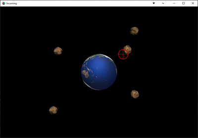

Tutorials for 2D games projects
New components introduced
| Animation set - how to make flipbook animations. | |
| Factory - how to spawn multiple game objects at run-time. | |
| Script - how to set motion paths, fade sprites, identifying the sender of a collision message and writing your own functions. |
Incoming | Step-by-step tutorial

The Oort cloud has been disrupted by a passing interstellar planet. It's gravitational influence has thrown comets towards the inner solar system. Save the earth from an extinction level event by knocking out the incoming comets!
This tutorial assumes you already know how to start a new Defold project, are familiar with the IDE, and can build game objects, applying scripts to them. If you have not used Defold before, you should start with the Pong tutorial.
- Stage 1: getting started.
- Stage 2: creating the atlas.
- Stage 3: creating the game objects:
- Stage 4: creating a comet spawner.
- Stage 5: scripting the player target.
- Stage 6: writing the collision message handlers.
- Stage 7: adding some 'snap'.
- Stage 8: adding some 'crackle'.
- Stage 9: adding some 'pop'.
What you learned in this tutorial
- Animation sets allow you to create flipbook animations by cycling through a number of sprites continually in an atlas.
- A factory allows you to dynamically spawn game objects at run-time.
- Vectors allow you to set a pre-determined motion path for a game object without having to manually update it's position in an update method.
- Input bindings allow you to get inputs from the mouse and with the on_input method and action variable you can determine its position on the screen when a button is pressed.
- Simple animations such as fading and rotating an object can be done with a single line of code.
- User-defined functions allow you to add more methods to game objects, create reusable program components and structure your solution.
 Craig'n'Dave | Version 1.3
Craig'n'Dave | Version 1.3